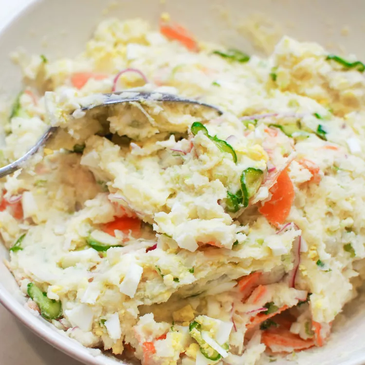

Potato Salad recipe

Description
Here we will show you how to cook this delicious low carb Japanese potato salad/p>
Ingredients
- crab
-
salad
- potatoes
- cream
- corn kernel
Steps
- chop the vegetables
- cook the potatoes on a pan with small amount of fat
- chop the potatoes
- mix the salad and potato with the cream
- season with a little amount of salt and vegetable oil